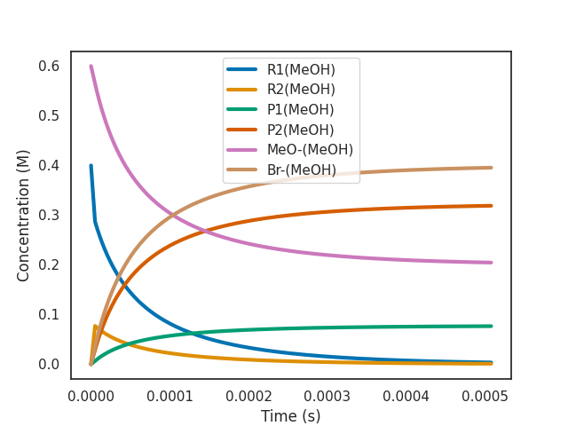

Quickstart
This is a step-by-step guide on using overreact as a command-line tool. It will teach you all the basics of overreact through a guided use-case.
\[\require{mhchem}\]
A simple Curtin-Hammett system
We're going to explore a system that is simple enough to be a tutorial, but also interesting enough to show off most of the capabilities of overreact. The reaction is a classical SN\(_2\) reaction on a substituted cyclohexane:

The labels above refer to the file names and the labels in the input file below. The steps above were calculated using GFN2-xTB by calling the Semiempirical Extended Tight-Binding Program Package (XTB) from within ORCA 4.2.1. Methanol was used as (implicit) solvent.
💡 You can download a zip file of this tutorial to run everything yourself.
Step 1: Create the input file
Inside the zip file, you'll find an input file called
methoxylation.k. It contains the following:
// methoxylation.k
// This is a comment.
$scheme
// Here we define our reactions.
R1(MeOH) <=> R2(MeOH)
P1(MeOH) <=> P2(MeOH)
R1(MeOH) + MeO-(MeOH) -> TS1#(MeOH) -> P1(MeOH) + Br-(MeOH)
R2(MeOH) + MeO-(MeOH) -> TS2#(MeOH) -> P2(MeOH) + Br-(MeOH)
$end
$compounds
// The path to the logfiles go here.
R1(MeOH): R1@MeOH/opt+numfreq.out
R2(MeOH): R2@MeOH/opt+numfreq.out
P1(MeOH): P1@MeOH/opt+numfreq.out
P2(MeOH): P2@MeOH/opt+numfreq.out
MeO-(MeOH): MeO-@MeOH/opt+numfreq.out
TS1#(MeOH): TS1@MeOH/b/optts+numfreq.out
Br-(MeOH): Br-@MeOH/singlepoint.out
TS2#(MeOH): TS2@MeOH/b/optts+numfreq.out
$end
It describes the reactions and the compounds in the system (take a look at a more detailed description of the input format here). The reactions are almost an exact translation of the diagram above (observe the labels in the figure are the same as in the input file).
✏️ Solvation is indicated by the parentheses at the end of compound names. As such, overreact adds corrections for solvation standard states to compounds such as
name(solv), wheresolvis any identifier you want to use. It is good practice to use an identifier that clearly identifies the chemical environment such asname(MeOH).
After performing the calculations, obtaining the logfiles, and writing the input file, it's time to run overreact.
Step 2: Run overreact (or a tour over a typical output)
A first run of overreact would look like this:
$ overreact methoxylation.k
This will produce quite an amount of output, so let's walk through it one step at a time.
2.1: The header
The current version v1.0.2 produces a header like this:
╔═══════════════════════════════════════════════════════════════════════════════════════════════════════╗
║ overreact 1.0.2 ║
╚═══════════════════════════════════════════════════════════════════════════════════════════════════════╝
📈 Create and analyze chemical microkinetic models built from computational chemistry data.
Licensed under the terms of the MIT License. If you publish work using this software, please cite
doi:10.5281/zenodo.5730603:
┌───────────────────────────────────────────────────────────────────────────────────────────────────────┐
│ │
│ @misc{overreact2021, │
│ howpublished = {\url{https://github.com/geem-lab/overreact}}, │
│ year = {2021}, │
│ author = {Schneider, F. S. S. and Caramori, G. F.}, │
│ title = { │
│ \textbf{geem-lab/overreact}: a tool for creating and analyzing │
│ microkinetic models built from computational chemistry data, v1.0.2 │
│ }, │
│ doi = {10.5281/zenodo.5730603}, │
│ url = {https://zenodo.org/record/5730603}, │
│ publisher = {Zenodo}, │
│ copyright = {Open Access} │
│ } │
└───────────────────────────────────────────────────────────────────────────────────────────────────────┘
Read the user guide at https://geem-lab.github.io/overreact-guide/ for more information and usage
examples. Other useful resources:
• Questions and Discussions
• Bug Tracker
• GitHub Repository
• Python Package Index
─────────────────────────────────────────────────────────────────────────────────────────────────────────
Inputs:
• Path = methoxylation.k
• Concentrations = []
• Verbose level = 0
• Compile? = False
• Plot? = none
• QRRHO? = both
• Temperature = 298.15 K
• Pressure = 101325.0 Pa
• Integrator = Radau
• Max. Time = 86400
• Rel. Tol. = 1e-05
• Abs. Tol. = 1e-11
• Bias = 0.0 kcal/mol
• Tunneling = eckart
The important for us at the moment is the Inputs section. It contains all the
information that overreact needs to run the calculations, so that you can check
if it's doing what you want.
Then, after some logging, the program prints information on the parsed reactions and compounds.
2.2: The reactions and compounds
For our example, the reactions are:
╭─────────────────────────────────────────────────────────────────╮
│ (read) reactions │
│ │
│ R1(MeOH) <=> R2(MeOH) │
│ P1(MeOH) <=> P2(MeOH) │
│ R1(MeOH) + MeO-(MeOH) -> TS1#(MeOH) -> P1(MeOH) + Br-(MeOH) │
│ R2(MeOH) + MeO-(MeOH) -> TS2#(MeOH) -> P2(MeOH) + Br-(MeOH) │
│ │
╰─────────────────────────────────────────────────────────────────╯
(parsed) reactions
no reactant(s) via‡ product(s) half equilib.?
─────────────────────────────────────────────────────────────────────────────────
0 R1(MeOH) R2(MeOH) Yes
1 R2(MeOH) R1(MeOH) Yes
2 P1(MeOH) P2(MeOH) Yes
3 P2(MeOH) P1(MeOH) Yes
4 R1(MeOH) + MeO-(MeOH) TS1#(MeOH) P1(MeOH) + Br-(MeOH) No
5 R2(MeOH) + MeO-(MeOH) TS2#(MeOH) P2(MeOH) + Br-(MeOH) No
logfiles
no compound path
────────────────────────────────────────────────
0 R1(MeOH) R1@MeOH/opt+numfreq.out
1 R2(MeOH) R2@MeOH/opt+numfreq.out
2 P1(MeOH) P1@MeOH/opt+numfreq.out
3 P2(MeOH) P2@MeOH/opt+numfreq.out
4 MeO-(MeOH) MeO-@MeOH/opt+numfreq.out
5 TS1#(MeOH) TS1@MeOH/b/optts+numfreq.out
6 Br-(MeOH) Br-@MeOH/singlepoint.out
7 TS2#(MeOH) TS2@MeOH/b/optts+numfreq.out
Here we have an opportunity to see the reactions disassembled and the species classified into reactants, products, and transition states. We also classify reactions as being part of an equilibrium reaction or not.
The next data involves the compounds.
2.3: The species
compounds
no compound elec. energy spin mult. smallest vibfreqs point group
〈Eₕ〉 〈cm⁻¹〉
────────────────────────────────────────────────────────────────────────────────────────────
0 R1(MeOH) -22.576340550900 1 +121.5, +207.0, +228.3 Cs
1 R2(MeOH) -22.575218880620 1 +111.9, +174.2, +238.2 Cs
2 P1(MeOH) -26.215281987160 1 +64.1, +121.7, +167.1 C1
3 P2(MeOH) -26.216556401840 1 +73.0, +119.6, +190.9 C1
4 MeO-(MeOH) -7.985271579600 1 +1133.7, +1177.9, +1179.5 C3v
5 TS1#(MeOH) -30.552250438240 1 -404.8, +22.4, +93.7 C1
6 Br-(MeOH) -4.435371316770 1 K
7 TS2#(MeOH) -30.558417149310 1 -451.8, +55.7, +86.2 C1
estimated thermochemistry (compounds)
no compound mass Gᶜᵒʳʳ Uᶜᵒʳʳ Hᶜᵒʳʳ S
〈amu〉 〈kcal/mol〉 〈kcal/mol〉 〈kcal/mol〉 〈cal/mol·K〉
──────────────────────────────────────────────────────────────────────────────────────────────
0 R1(MeOH) 163.06 80.57 103.35 103.94 78.38
1 R2(MeOH) 163.06 80.63 103.21 103.80 77.73
2 P1(MeOH) 114.19 105.68 129.35 129.95 81.39
3 P2(MeOH) 114.19 105.63 129.38 129.98 81.64
4 MeO-(MeOH) 31.03 9.96 23.18 23.77 46.33
5 TS1#(MeOH) 194.09 99.20 127.78 128.37 97.85
6 Br-(MeOH) 79.90 -8.27 0.89 1.48 32.70
7 TS2#(MeOH) 194.09 99.77 127.83 128.42 96.11
Here we have the information about the compounds. overreact uses the electronic energy, geometry, atomic masses,vibrational frequencies, charge and spin multiplicity to obtain all it needs to run the calculations. In particular, the point groups are obtained from the geometries and atomic masses. We see that the \(\ce{MeO-}\) ion gets classified as \(C_{3v}\) and both reactants are \(C_s\). Then the next table shows the estimated thermochemistry for the compounds.
Then comes the data about the reactions.
2.4: The reactions
The next two tables show the reaction thermochemistry.
estimated (reaction°) thermochemistry
no reaction Δmass° ΔG° ΔE° ΔU° ΔH° ΔS°
〈amu〉 〈kcal/mol〉 〈kcal/mol〉 〈kcal/mol〉 〈kcal/mol〉 〈cal/mol·K〉
──────────────────────────────────────────────────────────────────────────────────────────────────────────────────────────────────────────
0 R1(MeOH) -> R2(MeOH) 0.00 0.76 0.70 0.57 0.57 -0.66
1 R2(MeOH) -> R1(MeOH) 0.00 -0.76 -0.70 -0.57 -0.57 0.66
2 P1(MeOH) -> P2(MeOH) 0.00 -0.85 -0.80 -0.77 -0.77 0.25
3 P2(MeOH) -> P1(MeOH) 0.00 0.85 0.80 0.77 0.77 -0.25
4 R1(MeOH) + MeO-(MeOH) -> P1(MeOH) + Br-(MeOH) -0.00 -48.99 -55.87 -52.16 -52.16 -10.62
5 R2(MeOH) + MeO-(MeOH) -> P2(MeOH) + Br-(MeOH) -0.00 -50.60 -57.38 -53.50 -53.50 -9.71
estimated (activation‡) thermochemistry
no reaction Δmass‡ ΔG‡ ΔE‡ ΔU‡ ΔH‡ ΔS‡
〈amu〉 〈kcal/mol〉 〈kcal/mol〉 〈kcal/mol〉 〈kcal/mol〉 〈cal/mol·K〉
──────────────────────────────────────────────────────────────────────────────────────────────────────────────────────────────────────────
0 R1(MeOH) -> R2(MeOH)
1 R2(MeOH) -> R1(MeOH)
2 P1(MeOH) -> P2(MeOH)
3 P2(MeOH) -> P1(MeOH)
4 R1(MeOH) + MeO-(MeOH) -> P1(MeOH) + Br-(MeOH) 0.00 14.55 5.87 7.13 6.54 -26.86
5 R2(MeOH) + MeO-(MeOH) -> P2(MeOH) + Br-(MeOH) 0.00 10.48 1.30 2.74 2.15 -27.94
The first table shows reaction free energies and its components. The second table shows the activation energies and its components. Equilibria appear as empty lines in the second table.
✏️ Observe that we show the 'mass variation' for each reaction in a dedicated column: it should be full of zeroes. It is a sanity check to make sure that the mass balance is satisfied, which is very useful for catching common mistakes.
Last, we have the kinetic data.
2.5: The kinetic data
estimated reaction rate constants
no reaction half equilib.? k k k κ
〈M⁻ⁿ⁺¹·s⁻¹〉 〈(cm³/particle)ⁿ⁻¹·s⁻¹〉 〈atm⁻ⁿ⁺¹·s⁻¹〉
──────────────────────────────────────────────────────────────────────────────────────────────────────────────────────────────────────────
0 R1(MeOH) -> R2(MeOH) Yes 1 1 1
1 R2(MeOH) -> R1(MeOH) Yes 3.63 3.63 3.63
2 P1(MeOH) -> P2(MeOH) Yes 4.16 4.16 4.16
3 P2(MeOH) -> P1(MeOH) Yes 1 1 1
4 R1(MeOH) + MeO-(MeOH) -> P1(MeOH) + Br-(MeOH) No 159 2.64e-19 6.5 1.18
5 R2(MeOH) + MeO-(MeOH) -> P2(MeOH) + Br-(MeOH) No 1.56e+05 2.59e-16 6.38e+03 1.21
Only in the table above, all Gibbs free energies were biased by 0.0 J/mol.
For half-equilibria, only ratios make sense.
The last table shows the reaction rate constants in three different units. We also have tunneling coefficients for convenience, but they are already included in the kinetic data.
⚠️ The reaction rate constants for equilibrium reactions are not "genuine" rate constants: they are calculated such that the equilibrium constant is satisfied. This is used during the microkinetic simulations. Only their ratios are meaningful.
Section 3: Microkinetic simulations
In order to perform a microkinetic simulation, all we have to do is add an initial condition to the command line:
$ overreact methoxylation.k "R1(MeOH):0.4" "MeO-(MeOH):0.6"
Initial conditions are given as a list of species and their concentrations separated by a colon.
✏️ The names are the same as in the input file and the concentrations are all in molar units.
A new section at the end of the output then appears:
initial and final concentrations
〈M〉
no compound t = 0 s t = 0.05 s
────────────────────────────────────────
0 R1(MeOH) 0.400 0.000
1 R2(MeOH) 0.000 0.000
2 P1(MeOH) 0.000 0.077
3 P2(MeOH) 0.000 0.323
4 MeO-(MeOH) 0.600 0.200
5 TS1#(MeOH) 0.000 0.000
6 Br-(MeOH) 0.000 0.400
7 TS2#(MeOH) 0.000 0.000
Simulation data was saved to methoxylation.csv
Here we see a sketch of the initial and final concentrations of the species and the approximate time when the reactions reach completion. A CSV file is created with the simulation data automatically as well, with concentrations as function of time. You can either analyze the data yourself or ask overreact to do a simple plot of the data for you.
3.1: Plot of "active" species
The active species are the ones that actually change their concentration during the simulation. You can ask overreact to plot them for you with the following command:
$ overreact methoxylation.k "R1(MeOH):0.4" "MeO-(MeOH):0.6" --plot=active
💡 You can also request a plot of all species with the
--plot=alloption, or of a specific species with something like--plot="P1(MeOH)".
The plot is shown immediately in a new window.

As we can see, the most abundant reactant at the beginning of the simulation is the R1(MeOH). This leads to product P1(MeOH) being formed most of the time. But P1(MeOH) rapidly interconverts to P2(MeOH) and then to R2(MeOH) and back
✏️ The customizations you can do in the command line are necessarily limited and serve mainly to help you explore the data. You can have full control over the plot, simulation parameters, and other factors by using the overreact API directly. Also, take a look at some of the example notebooks.
3.1.1: The effect of a bias
overreact allows one to apply a bias to the Gibbs free energy of all species. This provides a way of counterbalancing systematic errors often found in computed Gibbs free energies, but is also useful for exploring the sensitivity of the generated profiles with respect to unknown error contributions.
In order to insert a bias, you can use the --bias option:
$ overreact methoxylation.k "R1(MeOH):0.4" "MeO-(MeOH):0.6" --plot=active --bias=-4.5
⚠️ Internally, overreact always uses joules/mol, but the bias is always given in kcal/mol for convenience.

As we can see from the plot above, a bias of -4.5 kcal/mol makes the reaction 2000x faster (as expected from \(\exp(4.5 \text{ kcal$\cdot$mol$^{-1}$} / R T) \approx 1989\) at room temperature).